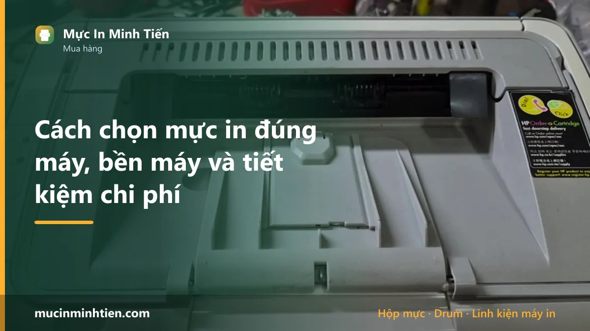
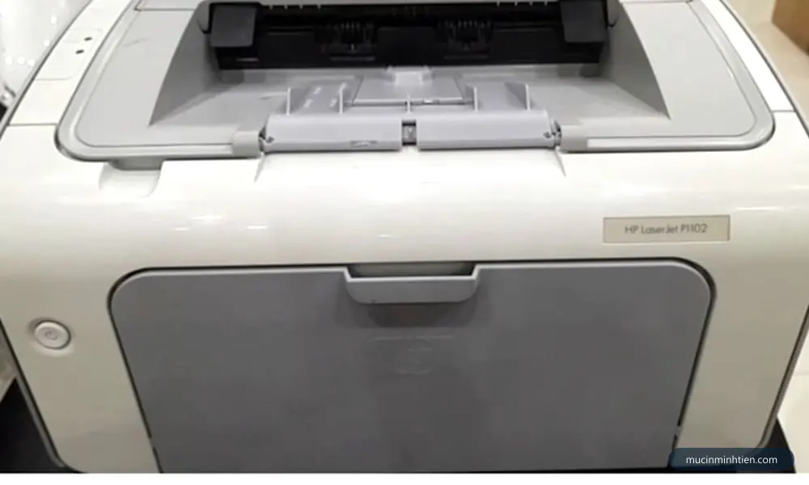
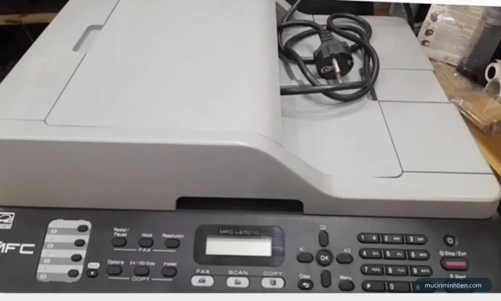
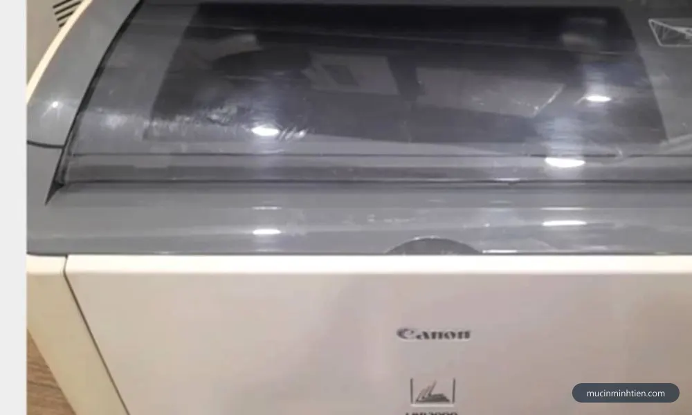
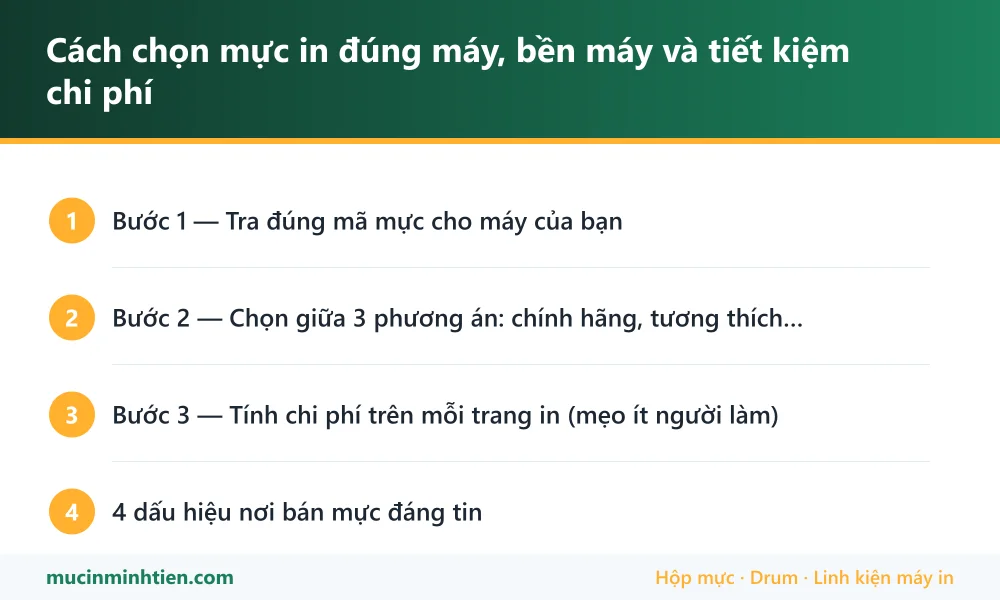

Cách chọn mực in đúng máy, bền máy và tiết kiệm chi phí

Chọn sai mực in là combo thiệt đủ đường: bản in xấu, hại trống, kẹt máy, có khi mất luôn bảo hành. Nhưng "chọn đúng" không có nghĩa lúc nào cũng phải mua chính hãng đắt nhất — tùy nhu cầu in mà có phương án tối ưu chi phí hơn nhiều. Bài này là kinh nghiệm tư vấn thực tế của cửa hàng cho từng nhóm khách.
Bước 1 — Tra đúng mã mực cho máy của bạn
- Cách chắc nhất: mở nắp máy, rút hộp mực đang dùng ra — mã in ngay trên hộp (HP 85A, Canon 337, Brother TN-2385, Epson 003…).
- Máy mới chưa có mực: đọc model trên tem máy (vd Canon LBP 2900 → dùng EP-303/12A tương đương; HP M107a → W1107A).
- Lười tra: chụp tem máy gửi Zalo 0915 510 203 — cửa hàng tra ngược mã mực trong 1 phút, hoặc gõ model máy vào ô tìm kiếm ở bảng giá 780 mã.

Bước 2 — Chọn giữa 3 phương án: chính hãng, tương thích, nạp lại
- Hộp mực chính hãng: chất lượng và độ ổn định cao nhất, giữ bảo hành máy — giá cao nhất. Hợp với: máy còn bảo hành, in hợp đồng/tài liệu quan trọng, in ảnh màu.
- Hộp mực tương thích (hàng for): hộp mới 100% do bên thứ ba sản xuất, rẻ hơn chính hãng 40-60%. Chất lượng phụ thuộc thương hiệu — chọn nơi bán có bảo hành đổi mới. Hợp với: văn phòng in nhiều muốn hộp mới nhưng ngân sách vừa.
- Nạp mực lại: rẻ nhất (bằng 1/3–1/5 hộp mới), tận dụng vỏ hộp cũ. Chất lượng tốt nếu nạp đúng loại bột mực và thay gạt/trống đúng chu kỳ. Hợp với: in tài liệu nội bộ số lượng lớn. Xem dịch vụ nạp mực tận nơi.

Bước 3 — Tính chi phí trên mỗi trang in (mẹo ít người làm)
Đừng chỉ nhìn giá hộp mực — hãy chia cho số trang in được (yield, in trên vỏ hộp):
- Hộp chính hãng 850.000đ in 3.000 trang → ~283đ/trang.
- Nạp mực 120.000đ in ~1.600 trang → ~75đ/trang.
In càng nhiều, chênh lệch càng lớn — văn phòng in 2.000 trang/tháng tiết kiệm được vài triệu mỗi năm chỉ bằng cách chọn phương án đúng. Ngược lại in lèo tèo vài chục trang/tháng thì cứ chính hãng cho lành, đỡ lo mực để lâu vón.

4 dấu hiệu nơi bán mực đáng tin
- Hỏi model máy trước khi báo giá — nơi nào báo giá không cần biết máy gì thì nên cẩn thận.
- Bảo hành rõ ràng: đổi hộp mới/nạp lại miễn phí nếu bản in lỗi.
- Giá công khai — tham khảo được trước, không "tùy mặt khách".
- Tư vấn cả phương án rẻ hơn khi phù hợp (vd khuyên nạp lại thay vì ép mua hộp mới).
Đọc thêm bài phân biệt mực in chính hãng và mực trôi nổi để tránh mua nhầm hàng giả — vấn nạn thật sự của ngành này.
